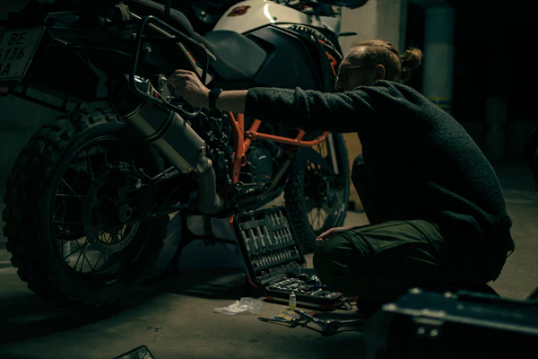

Gebrauchte Töffs · Schweiz
Ist der Töff seinen Preis wert?
Du hast ein Inserat gefunden und willst wissen, ob der Preis stimmt? Gib es zusammen mit ein paar Vergleichsangeboten ein. Töffcheck rechnet den fairen Preis für genau diesen Kilometerstand aus und zeigt dir, worauf du bei diesem Modell achten musst.
- Kostenlos
- Ohne Anmeldung
- Rechnet nur in deinem Browser
- 108 Modelle im Ratgeber
So gehst du vor
- 01
Inserat eintragen
Modell, Jahrgang, Kilometer und Preis aus dem Inserat übernehmen.
- 02
Vergleichen
Drei oder mehr ähnliche Angebote auf MotoScout24, tutti.ch oder ricardo suchen und Preis, Kilometer und Jahrgang eintragen.
- 03
Besichtigen
Mit der Checkliste zum Verkäufer. Jeder gefundene Mangel ist ein Argument beim Verhandeln.
Preis-Check
Was ist der Töff wert?
C Was nach dem Kauf noch ansteht (optional)
Neue Reifen, Service, Reparaturen: Schätz die Kosten, zum Beispiel nach einer Offerte deiner Werkstatt. Töffcheck rechnet sie zum Preis dazu.
Modell-Ratgeber
Tipp
Im Herbst kaufen, im Frühling fahren.
Ab Oktober wollen viele ihren Töff vor dem Winter loswerden. Weniger Käufer heisst mehr Spielraum beim Preis.
Besichtigung
Die Checkliste für jeden Töff
Diese Punkte gelten für alle Modelle. Nimm sie aufs Handy oder druck sie aus, zusammen mit den Punkten zu deinem Modell oben. Hak ab, was du geprüft hast.
1 Papiere und Vorgeschichte
2 Rahmen und Fahrwerk
3 Motor
4 Elektrik
5 Antrieb und Bremsen
6 Reifen
7 Probefahrt
8 Kauf

Wie alt sind die Reifen?
Auf der Reifenflanke steht nach «DOT» eine Reihe von Zeichen. Die letzten vier Ziffern sind Woche und Jahr der Herstellung. «2319» heisst also Woche 23 im Jahr 2019.
Fragen
Kurz erklärt
Woher kommen die Preise?
Von dir. Töffcheck öffnet die passende Suche auf MotoScout24, ricardo, tutti.ch und Facebook Marketplace. Die Inserate selbst darf die Seite nicht automatisch auslesen, das verbieten die Nutzungsbedingungen der Plattformen. Du kopierst den Text eines Inserats ins Feld, Töffcheck holt Preis, Kilometer und Jahrgang heraus und rechnet daraus den fairen Preis.
Wie rechnet Töffcheck den fairen Preis?
Je mehr Kilometer, desto günstiger, das gilt fast immer. Töffcheck legt eine Linie durch deine Vergleichsangebote (Preis über Kilometer) und liest ab, was ein Töff mit dem Kilometerstand deines Inserats kosten sollte. Liegt der Preis mehr als 8 % darunter, ist es ein guter Deal, liegt er mehr als 8 % darüber, ist er zu teuer. Mehr als 25 % darunter gilt als auffällig tief. Sinkt der Preis bei deinen Angeboten nicht mit den Kilometern, nimmt Töffcheck den mittleren Preis (Median).
Wie viele Vergleichsangebote brauche ich?
Mindestens drei. Mit fünf bis acht Angeboten wird das Ergebnis deutlich stabiler. Nimm das gleiche Modell und ähnliche Jahrgänge. Stark abweichende Angebote markiert Töffcheck rot und rechnet sie nicht mit.
Was heisst «ab MFK»?
Der Töff war frisch bei der Motorfahrzeugkontrolle des Strassenverkehrsamts und hat sie bestanden. Mängel aus der Prüfung sind behoben. Frag nach dem Prüfbericht.
Was bedeutet 35 kW oder A2?
Mit dem Ausweis der Kategorie A beschränkt darfst du Töffs mit höchstens 35 kW fahren. Viele Modelle gibt es gedrosselt. Wichtig: Die Drosselung muss im Fahrzeugausweis eingetragen sein. Auf der Modellseite kannst du nach A2-tauglichen Töffs filtern.
Werden meine Eingaben gespeichert?
Nein. Der Preis-Check rechnet nur in deinem Browser. Gespeichert wird nur, was du freiwillig in die Warteliste einträgst. Mehr dazu in der Datenschutzerklärung.
Mein Modell fehlt. Was nun?
Wähl «Anderes Modell» und die Art des Töffs. Du bekommst dann die allgemeinen Punkte und die typischen Schwachstellen dieser Töff-Art. Wenn du ein Modell vermisst, schreib an lara.schlueter07@gmail.com.
Wer steckt hinter Töffcheck?
Töffcheck ist ein Schulprojekt einer Töff-Fahrerin aus Wädenswil. Es steht keine Firma dahinter, und die Seite ist kostenlos. Details im Impressum.
Bald verfügbar
Deal-Alarm für dein Traumbike
Sag uns, welches Modell du suchst. Wenn der Deal-Alarm startet, meldet er sich, sobald ein Angebot unter dem fairen Preis auftaucht. Trag dich ein, dann erfährst du als Erstes davon.